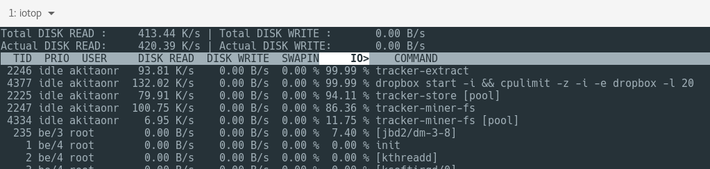
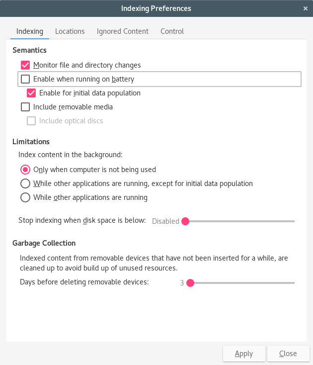

It's about Responsiveness, not performance!
Most people's concerns are first about performance, and this is a mistake. Linux is plenty fast, but for many people it doesn't feel like so in the Desktop.
When tuning a server, you'll really want to tweak for performance and high throughput. That's where most Linux configurations really shine over the competition: they come better tuned to get the most out of server configurations.
But in a Desktop you don't want that. For example, you're copying a 20GB file to your old USB thumb drive, or you're unzipping a large file, or you're compiling that large package from source, or you leave Dropbox in the background syncing gigabytes of files from their servers. Or you're doing "nothing" (in the foreground at least, but Gnome Tracker is heavily indexing your files in the background) and your environment stutters, hangs for a few seconds, and keeps doing that every so often.
And you're left wondering why Linux is so bad compared to Windows or macOS where you don't see the same behavior on similar hardware.
There is a term that is still misunderstood: real-time.
Being real-time does not mean "computing super fast", it means "being predictable". If something needs to happen in a certain frequency, it doesn't matter if each cycle takes 1 second as long as it consistently takes the same 1 second - in all deadlines. If you have a "fast" machine that computes faster at 10 milliseconds every cycle, but every so often, randomly hangs for a couple of seconds, this is not real-time. And for media creation, it's a disaster.
There is hard real-time where one peak or valley can be considered a catastropic failure, and soft real-time where you can handle a few peaks, but not so much. Hard real time requirements are rare, unless you're developing systems for nuclear plants you may miss a few deadlines.
Most responsiveness issues are related to soft real-time situations. You can handle a few sparse peaks here and there, but no more than a few. And this is how you should do your research: not Googling for "linux performance" but for "linux real-time" or "linux responsiveness".
You will also find that there are niche professionals with special distros just for audio recording and editing, for example AVLinux or KXStudio.
macOS is particularly good for media creators precisely because it's highly tuned for soft real-time, which is critical for software such as Logic Pro. And for the same reason, it's poor server OS. You will notice that the default Quicktime screen recording is super smooth, you rarely see stutters.
But you don't need to use an audio specific distro or a hard real-time kernel. Critical audio distros don't use PulseAudio, but normal users will not be so concerned about it. We can tune it to find a good balance between responsiveness and performance. If you really want to go hard-core, you may want to read the Linux Audio Wiki on Real Time, but it's out of the scope of this article.
What are the real Bottlenecks?
A "slow" computer is not necessarily sporting old CPUs. I am doing my tests on a very old Lenovo Thinkcentre Edge 71z tower desktop. It has an old 2nd generation Intel Core 2.4Ghz 4 cores SandyBridge CPU. We just saw the release of the 7th generation Kaby Lake processors, so one might assume that nothing would run on such an old CPU, but you would be wrong.
CPU is usually not serious a bottleneck unless you're doing really intensive computation, such as video compression, data sciences, genetics, neural networks, etc.
For a casual user or even a heavy-weight developer, any processor better than the 1st generation Intel Core series is plenty.
GPU is also rarely a bottleneck unless you're doing heavy gaming or 4K renderings. Most of the time you don't really need a USD 7000 dedicated GTX 1080.
By the way, this is not necessary for most systems, but just to be on the safe side do this:
1 2 |
sudo pacman -S mesa-demos glxinfo | grep direct |
You should see direct rendering: Yes. If not, refer to your distro documentation, because this means you're not compositing through the GPU and you're wasting CPU cycles rendering your screen!
If you try to measure your CPU and GPU usages, you will realize that most of the time they are actually idle! That's right, you're mostly underusing your machine cores.
The bottleneck usually boils down to I/O.
RAM vs SWAP
Now, you're opening your shiny Chromium browser. Anyone fooling around for a few minutes will open an average of a dozen or more tabs, without breaking a sweat.
It's super easy to eat up all 8GB of the average machines. Whenever that happens, the OS will have to start offloading data to disk, which is orders of magnitude slow.
If application data is offloaded to disk and you alt-tab to it later, the OS will reach a "page fault", and it will have to load from disk, from the swap file/partition. And again, this will have the effect of blocking your actions. The environment may stutter for a second or more, making it unresponsive.
The very first thing you may want to do is install an extension such as The Great Suspender. It will simply close all tabs but the one you're reading right now. When you change to another tab it will reload it. The effect is that you're not using RAM if you really don't need to.

This extension alone can save you a couple of GIGABYTES of RAM, which is no small thing if you have 8GB or less.
The other thing to consider is that Linux comes pre-configured to balance out offloading application data to swap to accomodate filesystem cache. So, if you're unzipping a large file, some of that data will go to RAM cache and application data will move to the disk. After you finish unzipping, you alt-tab to applications and boom: page faults, unresponsiveness.
So you want to configure the OS to more aggressively keep your application state in RAM, and this is how you do it:
1 2 3 4 |
sudo tee -a /etc/sysctl.d/99-sysctl.conf <<-EOF vm.swappiness=1 vm.vfs_cache_pressure=50 EOF |
While on the topic of storage, you will find some older kernels making your machine become unresponsive when dealing with slower storage, such as USB drives or SD cards. This is how you tweak it:
1 2 3 4 |
sudo tee -a /etc/sysctl.d/99-sysctl.conf <<-EOF vm.dirty_background_bytes=16777216 vm.dirty_bytes=50331648 EOF |
If you don't want to reboot right now, you can run this in a Terminal:
1 2 3 4 |
sudo sysctl -w vm.swappiness=1 sudo sysctl -w vm.vfs_cache_pressure=50 sudo sysctl -w vm.dirty_background_bytes=16777216 sudo sysctl -w vm.dirty_bytes=50331648 |
Don't go too far on tuning, for example, never disable a file system journaling. It increases performance at the risk of putting your data in risk of corruption.
Schedulers
Why was "Linux not ready for the Desktop" years ago?
Because it took too many years to finally start tackling low latency, inexpensive thread switching, better scheduling. You have to thank Con Kolivas, Ingo Molnár, Thomas Gleixner. The Linux kernel development is known to be super difficult to deal with and Con Kolivas is one of its victims, but his work live on to allow us to have better Desktop experiences these days.
There are Process Schedulers and I/O Schedulers. The first is responsible to manage the Preemption of the kernel, how it switches between different computational tasks, the low-level equivalent of you "alt-tabbing" through apps, so to speak.
I/O Schedulers deal with sharing slow I/O resources with competing processes needing to read from disk, write to RAM, etc.
The recent history of process scheduler for the Desktop boils down to Con Kolivas' works on fair scheduling, leading to Ingo Mólnar's Completely Fair Scheduler (CFS) which is the default in most distros nowadays and the continuing work of Kolivas on Staircase, Rotating Staircase Deadline, Staircase Deadlineee, Brain Fuck Scheduler (BFS), and the most recent Multiple Queue Skiplist Scheduler (MuQSS).
Then there are I/O Schedulers. For the most part you will be dealing with the Completely Fair Queueing (CFQ). Most development on this side is attributed to Jens Axboe, also responsible for the Deadline Scheduler and Noop Scheduler. Then there is the controversial evolution called Budget Fair Queueing (BFQ).
When you have SSDs (and this is why you want SSDs), you will more likely choose NOOP (or Deadline) just because there is no need to waste computation time managing complex I/O queues for SSDs as they can easily handle up to tens of thousands of I/O operations concurrently without breaking a sweat.
But if you have to use mechanical hard-drives, particularly the old and super slow 5.400rpm ones, you will want to manage the I/O queue efficiently, touching the spinning plates as little as possible. And in this case, you will really want to use something like BFQ (or at least leave it at the default CFQ).
You can check which I/O Scheduler you're running like this:
1 2 |
$ cat /sys/block/sda/queue/scheduler noop deadline cfq [bfq] |
In the example above you will see that [bfq] is the one active, but you can change it on the fly to test it out if you want.
To take advantage of those newest schedulers to better optimize slow computers, your best bet is to install Linux Zen kernel, a version of Liquorix. It includes de MuQSS scheduler instead of CFS and BFQ instead of CFQ, while also adding more tweaks for responsiveness like proper QoS over TCP to avoid TCP congestion.
In Arch Linux it's a simple thing to do:
1 2 |
sudo pacman -Sy linux-zen sudo grub-mkconfig -o /boot/grub/grub.cfg |
For Ubuntu, you may want to refer to Liquorix's Install Page as it depends on your CPU, but most likely you will install on 64-bit machines:
1 2 |
sudo apt-get install liquorix-keyring apt-get install linux-image-liquorix-amd64 linux-headers-liquorix-amd64 |
Is GNOME 3 too slow?
I always heard that GNOME and even KDE are too slow, you should just use XFCE (or LXQt, or MATE).
And it always striked me as one of those things people just keep repeating until it becomes the official canon.
As an engineer, I dislike thinking that way. Defying the canon is more like what an engineer should do.
GNOME 3.22 is an ever evolving environment and ecosystem. It's good looking by default, no need to tweak it too much. And it has several built-in conveniences such as GNOME Online Accounts, Tracker for indexing files and making them easily searchable, GNOME Photos that sync from Google Photos, and so on. Every nicety we like about a system like macOS.
Convenience is a trade-off of performance and responsiveness. So high-end machines will benefit from the convenience and old machines will suffer because of the extra "bloat" in the background.
How do you maintain some of the convenience on old hardware?
Again, you must understand what's going on. The first thing you must install is htop and iotop. The first is good to see what processes running in the background may be eating up your CPU or RAM. The second is good to see what processes are bloating your I/O queues doing background file/network operations.
What I found out in my system were 2 main offenders: Dropbox and Tracker.

Dropbox is optional, but most people nowadays use it. Out of the box it is a hidious monster, one of the worst pieces of software you're obligated to live with.
The first time you install and it has to download everything, your machine will go down to its knees. Nothing to do about that, just remember to install it Friday night and leave it running in the office over the weekend.
Then, edit the /usr/share/applications/dropbox.desktop and replace the Exec=dropbox line with this:
1 |
Exec=ionice -c 3 -n 7 dropbox start -i && cpulimit -b -e dropbox -l 10 |
This "should" tune down Dropbox to have the least amount of CPU time and only have I/O when the system is idle.
Another way is to install Ananicy. It is a daemon that promises to automatically set NICE and IOCLASS of selected processes just like using ionice and cpulimit above. You can install it in Arch like this:
1 |
sudo pacaur -S ananicy-git |
And if you cat /etc/ananicy.d/dropbox.rules you will see a rule set like this:
1 2 |
# Dropbox client: https://www.dropbox.com NAME=dropbox NICE=19 IOCLASS=idle |
Which is basically what we did in the Exec line tweak. I didn't test Ananicy enough but if it does what's promised, it's even easier as it comes with pre-configured rules for applications such as make, VLC, transmission, etc.
Then, there is Tracker. The purpose of this tool is to index your files so you can search them fast and easily through GNOME applications such as the Nautilus File Manager.
Again, the first time you install your new GNOME environment it will be very expensive to build the first index pass, specially if you're downloading tons of files from Dropbox. Do it on a Friday night!
But you should also tune it down to only run when your system is idle. Run Alt-F2 and type tracker-preferences, then configure it to look like this:

In the same applet, also configure it to ignore log directories and *.log file patterns!
Only those 2 things should make your machine WAY more responsive when using slow mechanical drives. I noticed that gnome-photos keeps running in the background and consuming some I/O, it is probably trying to sync your online photos from Google if you set GNOME Online Accounts.
Dropbox, Tracker, Gnome-Photos, will all cause your initial experience to suck. But if you have patience - and a fast internet connection - they should settle down after the initial heavy sync.
GNOME has other services in the background, namely:
1 2 3 4 5 6 |
gnome-session gnome-shell gnome-settings-daemon gnome-online-accounts evolution-data-server gjs-console |
There must be more depending on optional apps you installed. Gnome-Shell and GJS are easily the worst of the bunch. You can't do much about them because they're the Core of GNOME. GJS in particular enables Javascript-based extensions and everything Javascript is slow. The only thing you can do is avoid installing too many GNOME Extensions.
By the way, if you install XFCE along-side GNOME, you may be surprised that many of the same background services will start up in the background! Install one or the other, not both in the same system.
On the other hand, a bare-bone Arch install with the XFCE4 package set will start up consuming around 150MB of RAM!! But of course, you lose all the niceties that comes pre-installed with GNOME. And also of course: you start Chromium, open a few tabs, and there goes all the RAM anyway.
If your goal is just to save resources, the choice is not between XFCE or LXQt, it is between having Facebook permanently opened in a browser tab or not. The reality is that the main offender of RAM is the Web as a whole. Half a dozen tabs and you eat up more than 1 Gigabyte, and it keeps going up. That's why my main first recommendation is to install The Great Suspender.
You will run far worst apps in the foreground. For example, Spotify, Franz, Atom, to name a few. If it's a hybrid app that load a browser to load a web application, it is going to be heavy.
And I'd choose a forward thinking desktop manager that already supports Wayland/Weston instead of X11. You do want to throw away the bad X11 legacy as soon as possible.
Summary
As a shorter TL;DR remember to do the following:
- Tune your swappiness and cache pressure settings to avoid page faults when using your foreground applications. It's a trade-off of performance vs responsiness.
- Install the Linux-Zen or Liquorix kernels (depending on your distro) to have access to the better MuQSS process scheduler and BFQ I/O schedulers. If you're using an SSD you will want to check if you're using NOOP or Deadline I/O schedulers instead. Also check for TRIM support.
- Make Dropbox and Tracker play nice with your system. Configure both to only run when You are not using the system (when idle). Maybe install Ananicy and rejoice.
- Do not choose a Desktop Manager because of performance concerns. If you're using Chromium or other web based applications, you're already doomed. So don't panic and use GNOME 3.22.
When I installed both Fedora 25 and Arch Linux I felt them sluggish. When I used Ubuntu 14.04 for months in a better hardware, I also felt it sluggish compared to macOS in similar hardware, but I never attempted this level of tunig before.
The main reason being the heavy initial sync of applications such as Dropbox, Tracker, Gnome-Photos.
The second reason is the better tuning of I/O scheduling and Swap settings because of the use of a mechanical harddrive. If you use an SSD you probably don't suffer nearly as much.
Bottomline: if you can, buy a good SSD. If you have PCI Express x4, then do even better and buy a M.2 SSD such as the Samsung 950 EVO M.2. The best thing you can do is have more than 8GB of RAM (16GB being a good sweet spot) and a really fast SSD (preferably with a BUS that don't suffer from SATA 3's bottlenecks).
With all the tweaks and tunings, I am happy to report that my years old Lenovo tower is running as smoothly as it can, being responsive enough even in higher loads, with this shit slow mechanical hard drive. And as a bonus, if you choose to stay in GNOME 3, install the nice Flat Plat theme, heavily inspired by Material Design, and the Paper or Moka icon sets.